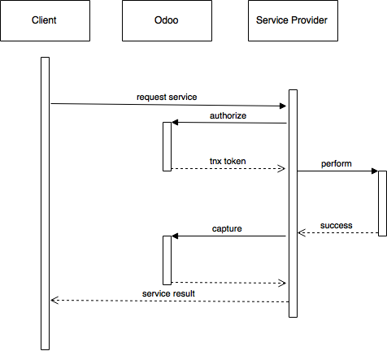

In-App Purchase (IAP) allow providers of ongoing services through Odoo apps to be compensated for ongoing service use rather than — and possibly instead of — a sole initial purchase.
In that context, Odoo acts mostly as a broker between a client and an Odoo App Developer:
- users purchase service tokens from Odoo
- service providers draw tokens from the user's Odoo account when service is requested
Attention
This document is intended for service providers and presents the latter, which can be done either via direct JSON-RPC2 or if you are using Odoo using the convenience helpers it provides.
Overview
The Players
- The Service Provider is (probably) you the reader, you will be providing value to the client in the form of a service paid per-use
- The Client installed your Odoo App, and from there will request services
- Odoo brokers crediting, the Client adds credit to their account, and you can draw credits from there to provide services
- The External Service is an optional player: you can either provide a service directly, or you can delegate the actual service acting as a bridge/translator between an Odoo system and the actual service
The Credits
Every service provided through the In-App platform can be used by the clients with tokens or credits. The credits are an integer unit and their monetary value depends on the service and is decided by the provider. This could be:
- for an sms service: 1 credit = 1 sms,
- for an add service: 1 credit = 1 add,
- for a postage service: 1 credit = 1 post stamp.
A credit can also simply be associated with a fixed amount of money to palliate the variations of price (e.g. the prices of sms and stamps may vary following the countries).
The value of the credits is fixed with the help of prepaid credit packs that the clients can buy on https://iap.odoo.com (see Packages).
Note
in the following explanations we will ignore the External Service, they're just a detail of the service you provide
A "normal" service flow
If everything goes well, the normal flow is:
- the Client requests a service of some sort
- the Service Provider asks Odoo if there are enough credits for the service in the Client's account, and creates a transaction over that amount
- the Service Provider provides the service (either on their own or calling to External Services)
- the Service Provider goes back to Odoo to capture (if the service could be provided) or cancel (if the service could not be provided) the transaction created at step 2
- finally the Service Provider notifies the Client that the service has been rendered, possibly (depending on the service) displaying or storing its results in the client's system
Insufficient Credits
If the Client's account lacks credits for the service, however
- the Client requests a service as previously
- the Service Provider asks Odoo if there are enough credits on the Client's account and gets a negative reply
- this is signaled back to the Client
- who is redirected to their Odoo account to credit it and re-try
Building your service
For this example, the service we will provide is ~~mining dogecoins~~ burning 10 seconds of CPU for a credit. For your own services, you could for example:
- provide an online service yourself (e.g. convert quotations to faxes for business in Japan)
- provide an offline service yourself (e.g. provide accountancy service)
- act as intermediary to an other service provider (e.g. bridge to an MMS gateway)
Register the service on Odoo
The first step is to register your service on the IAP endpoint (production and/or test) before you can actually query user accounts. To create a service, go to your Portal Account on the IAP endpoint (https://iap.odoo.com for production, https://iap-sandbox.odoo.com for testing, the endpoints are independent and not synchronized).
Note
On production, there is a manual validation step before the service can be used to manage real transactions. This step is automatically passed when on sandbox to ease the tests.
Log in then go to , click Create and provide the name of your service.
The now created service has two important fields:
name-ServiceName: this will identify your service in the client's app communicates directly with IAP.key-ServiceKey: the developer key that identifies you in IAP (see your service) and allows to draw credits from the client's account.
Warning
The ServiceName is unique and should usually match the name of your
Odoo App.
Danger
Your ServiceKey is a secret, leaking your service key
allows other application developers to draw credits bought for
your service(s).
You can then create credit packs which clients can purchase in order to use your service.
Packages
The credit packages are essentially a product with 4 characteristics.
- Name: the name of the package,
- Description: details on the package that will appear on the shop page as well as the invoice,
- Credits: the amount of credits the client is entitled to when buying the package,
- Price: the price in EUROS for the time being (USD support is planned).
Note
Odoo takes a 25% commission on all package sales. Adjust your selling price accordingly.
Note
Depending on the strategy, the price per credit can vary from one package to another.
Odoo App
The second step is to develop an Odoo App which clients can install in their Odoo instance and through which they can request services you will provide. Our app will just add a button to the Partners form which lets a user request burning some CPU time on the server.
First, we'll create an odoo module depending on iap. IAP is a standard
V11 module and the dependency ensures a local account is properly set up and
we will have access to some necessary views and useful helpers
{
'name': "Coal Roller",
'category': 'Tools',
'depends': ['iap'],
}
# -*- coding: utf-8 -*-
Second, the "local" side of the integration, here we will only be adding an action button to the partners view, but you can of course provide significant local value via your application and additional parts via a remote service.
'name': "Coal Roller",
'category': 'Tools',
'depends': ['iap'],
'data': [
'views/views.xml',
],
}
<odoo>
<record model="ir.ui.view" id="partner_form_coalroll">
<field name="name">partner.form.coalroll</field>
<field name="model">res.partner</field>
<field name="inherit_id" ref="base.view_partner_form" />
<field name="arch" type="xml">
<xpath expr="//div[@name='button_box']">
<button type="object" name="action_partner_coalroll"
class="oe_stat_button" icon="fa-gears">
<div class="o_form_field o_stat_info">
<span class="o_stat_text">Roll Coal</span>
</div>
</button>
</xpath>
</field>
</record>
</odoo>
We can now implement the action method/callback. This will call our own server.
There are no requirements when it comes to the server or the communication
protocol between the app and our server, but iap provides a
jsonrpc() helper to call a JSON-RPC2 endpoint on an
other Odoo instance and transparently re-raise relevant Odoo exceptions
(InsufficientCreditError,
odoo.exceptions.AccessError and odoo.exceptions.UserError).
In that call, we will need to provide:
- any relevant client parameter (none here)
- the
tokenof the current client, this is provided by theiap.accountmodel'saccount_tokenfield. You can retrieve the account for your service by callingenv['iap.account'].get(service_name)whereservice_nameis the name of the service registered on IAP endpoint.
# -*- coding: utf-8 -*-
from . import models
from . import res_partner
# -*- coding: utf-8 -*-
from odoo import api, models
from odoo.addons.iap import jsonrpc, InsufficientCreditError
# whichever URL you deploy the service at, here we will run the remote
# service in a local Odoo bound to the port 8070
DEFAULT_ENDPOINT = 'http://localhost:8070'
class Partner(models.Model):
_inherit = 'res.partner'
@api.multi
def action_partner_coalroll(self):
# fetch the user's token for our service
user_token = self.env['iap.account'].get('coalroller')
params = {
# we don't have any parameter to provide
'account_token': user_token.account_token
}
# ir.config_parameter allows locally overriding the endpoint
# for testing & al
endpoint = self.env['ir.config_parameter'].sudo().get_param('coalroller.endpoint', DEFAULT_ENDPOINT)
jsonrpc(endpoint + '/roll', params=params)
return True
Note
iap automatically handles
InsufficientCreditError coming from the action
and prompts the user to add credits to their account.
jsonrpc() takes care of re-raising
InsufficientCreditError for you.
Danger
If you are not using jsonrpc() you must be
careful to re-raise
InsufficientCreditError in your handler
otherwise the user will not be prompted to credit their account, and the
next call will fail the same way.
Service
Though that is not required, since iap provides both a client helper
for JSON-RPC2 calls (jsonrpc()) and a service helper
for transactions (charge) we will also be
implementing the service side as an Odoo module:
# -*- encoding: utf-8 -*-
{
'name': "Coal Roller Service",
'category': 'Tools',
'depends': ['iap'],
}
Since the query from the client comes as JSON-RPC2 we will need the
corresponding controller which can call charge and
perform the service within:
import time
from passlib import pwd, hash
from odoo import http
from odoo.addons.iap import charge
class CoalBurnerController(http.Controller):
@http.route('/roll', type='json', auth='none', csrf='false')
def roll(self, account_token):
# the service key *is a secret*, it should not be committed in
# the source
service_key = self.env['ir.config_parameter'].sudo().get_param('coalroller.service_key')
# we charge 1 credit for 10 seconds of CPU
cost = 1
# TODO: allow the user to specify how many (tens of seconds) of CPU they want to use
with charge(http.request.env, service_key, account_token, cost):
# 10 seconds of CPU per credit
end = time.time() + (10 * cost)
while time.time() < end:
# we will use CPU doing useful things: generating and
# hashing passphrases
p = pwd.genphrase()
h = hash.pbkdf2_sha512.hash(p)
# here we don't have anything useful to the client, an error
# will be raised & transmitted in case of issue, if no error
# is raised we did the job
# -*- encoding: utf-8 -*-
from . import main
# -*- encoding: utf-8 -*-
from . import controllers
The charge helper will:
Note
Since the 15th of January 2018, a new functionality that allows one to capture a different amount than autorized has been added. See Charging
- authorize (create) a transaction with the specified number of credits, if the account does not have enough credits it will raise the relevant error
- execute the body of the
withstatement - (NEW) if the body of the
withexecutes succesfully, update the price of the transaction if needed - capture (confirm) the transaction
- otherwise if an error is raised from the body of the
withcancel the transaction (and release the hold on the credits)
Danger
By default, charge contacts the production
IAP endpoint, https://iap.odoo.com. While developing and testing your
service you may want to point it towards the development IAP endpoint
https://iap-sandbox.odoo.com.
To do so, set the iap.endpoint config parameter in your service
Odoo: in debug/developer mode, , just define an entry for the key
iap.endpoint if none already exists).
The charge helper has two additional optional
parameters we can use to make things clearer to the end-user:
description- is a message which will be associated with the transaction and will be displayed in the user's dashboard, it is useful to remind the user why the charge exists
credit_template- is the name of a QWeb template which will be rendered and shown to the user if their account has less credit available than the service provider is requesting, its purpose is to tell your users why they should be interested in your IAP offers
def roll(self, account_token):
# the service key *is a secret*, it should not be committed in
# the source
service_key = http.request.env['ir.config_parameter'].sudo().get_param('coalroller.service_key')
# we charge 1 credit for 10 seconds of CPU
cost = 1
# TODO: allow the user to specify how many (tens of seconds) of CPU they want to use
with charge(http.request.env, service_key, account_token, cost,
description="We're just obeying orders",
credit_template='coalroller_service.no_credit'):
# 10 seconds of CPU per credit
end = time.time() + (10 * cost)
<odoo>
<template id="no_credit" name="No credit warning">
<div>
<div class="container-fluid">
<div class="row">
<div class="col-sm-7 col-md-offset-1 mt32 mb32">
<h2>Consume electricity doing nothing useful!</h2>
<ul>
<li>Heat our state of the art data center for no reason</li>
<li>Use multiple watts for only 0.1€</li>
<li>Roll coal without going outside</li>
</ul>
</div>
</div>
</div>
</div>
</template>
</odoo>
'name': "Coal Roller Service",
'category': 'Tools',
'depends': ['iap'],
'data': [
'views/no-credit.xml',
],
}
JSON-RPC2 Transaction API
- The IAP transaction API does not require using Odoo when implementing your server gateway, calls are standard JSON-RPC2.
- Calls use different endpoints but the same method on all endpoints
(
call). - Exceptions are returned as JSON-RPC2 errors, the formal exception name is
available on
data.namefor programmatic manipulation.
Capture
/iap/1/capture
Confirms the specified transaction, transferring the reserved credits from the user's account to the service provider's.
Capture calls are idempotent: performing capture calls on an already captured transaction has no further effect.
- token (
TransactionToken) -- - key (
ServiceKey) -- - credit_to_capture (
int) -- (new - 15 Jan 2018) optional parameter to capture a smaller amount of credits than authorized
r2 = requests.post(ODOO + '/iap/1/capture', json={
'jsonrpc': '2.0',
'id': None,
'method': 'call',
'params': {
'token': tx,
'key': SERVICE_KEY,
'credit_to_capture': credit or False,
}
}).json()
if 'error' in r:
# handle capture error
# otherwise transaction is captured
Cancel
/iap/1/cancel
Cancels the specified transaction, releasing the hold on the user's credits.
Cancel calls are idempotent: performing capture calls on an already cancelled transaction has no further effect.
- token (
TransactionToken) -- - key (
ServiceKey) --
r2 = requests.post(ODOO + '/iap/1/cancel', json={
'jsonrpc': '2.0',
'id': None,
'method': 'call',
'params': {
'token': tx,
'key': SERVICE_KEY,
}
}).json()
if 'error' in r:
# handle cancel error
# otherwise transaction is cancelled
Types
Exceptions aside, these are abstract types used for clarity, you should not care how they are implemented
class ServiceName
String identifying your service on https://iap.odoo.com (production) as well as the account related to your service in the client's database.
class ServiceKey
Identifier generated for the provider's service. Each key (and service) matches a token of a fixed value, as generated by the service provide.
Multiple types of tokens correspond to multiple services e.g. SMS and MMS could either be the same service (with an MMS being "worth" multiple SMS) or could be separate services at separate price points.
Danger
your service key is a secret, leaking your service key allows other application developers to draw credits bought for your service(s).
class UserToken
Identifier for a user account.
class TransactionToken
Transaction identifier, returned by the authorization process and consumed by either capturing or cancelling the transaction
exception odoo.addons.iap.models.iap.InsufficientCreditError
Raised during transaction authorization if the credits requested are not currently available on the account (either not enough credits or too many pending transactions/existing holds).
exception odoo.exceptions.AccessError
Raised by:
- any operation to which a service token is required, if the service token is invalid.
- any failure in an inter-server call. (typically, in
jsonrpc())
exception odoo.exceptions.UserError
Raised by any unexpeted behaviour at the discretion of the App developer (you).
Odoo Helpers
For convenience, if you are implementing your service using Odoo the iap
module provides a few helpers to make IAP flow even simpler:
Charging
Note
A new functionality was introduced to capture a different amount of credits than reserved.
As this patch was added on the 15th of January 2018, you will need to upgrade your iap module in order to use it.
The specifics of the new functionality are highlighted in the code.
class odoo.addons.iap.models.iap.charge(env, key, account_token, credit[, description, credit_template])
A context manager for authorizing and automatically capturing or cancelling transactions for use in the backend/proxy.
Works much like e.g. a cursor context manager:
- immediately authorizes a transaction with the specified parameters
- executes the
withbody - if the body executes in full without error, captures the transaction
- otherwise cancels it
- env (
odoo.api.Environment) -- used to retrieve theiap.endpointconfiguration key - key (
ServiceKey) -- - token (
UserToken) -- - credit (
int) -- - description (
str) -- - template credit_template (
Qweb) --
@route('/deathstar/superlaser', type='json')
def superlaser(self, user_account,
coordinates, target,
factor=1.0):
"""
:param factor: superlaser power factor,
0.0 is none, 1.0 is full power
"""
credits = int(MAXIMUM_POWER * factor)
with charge(request.env, SERVICE_KEY, user_account, credits) as transaction:
# TODO: allow other targets
transaction.credit = max(credits, 2)
# Sales ongoing one the energy price,
# a maximum of 2 credits will be charged/captured.
self.env['systems.planets'].search([
('grid', '=', 'M-10'),
('name', '=', 'Alderaan'),
]).unlink()